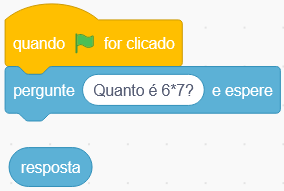

1. Comece um novo projeto
2. Escolha um cenário.
3. Adicione um ator, ele será responsável por fazer as perguntas para o usuário ou jogador.
4. Adicione o seguinte código.

Lembrando que em computação utilizamos o símbolo asterisco (*) como sinal de multiplicação
5. Agora nosso ator fará a pergunta que escolhemos (você pode mudá-la se quiser). A resposta dada pelo usuário ficará dentro da variável "resposta"
6. Agora devemos verificar se a resposta que recebemos do jogador está correta. Continue o seu código para ele ficar assim.
7. Neste código estamos verificando se a resposta recebida pelo usuário é igual a 42. Se for, significa que a resposta está correta e o personagem elogiará o jogador. Caso esteja errado, ele dirá que está errado e dirá a resposta correta
8. Agora podemos também adicionar uma pontuação (que aumenta toda vez que o usuário acerta uma pergunta).
9. Crie uma nova variável e dê o nome de "Pontos"
10. Adicione o bloco "Mude Pontos para 0" no início do seu código, para a pontuação seja zerada toda vez que começarmos um novo jogo.
11. Agora adicione o bloco "Adicione 1 a pontos" quando o usuário acertar a respostas, para adicionar pontos à pontuação dele se ele tiver acertado.
12. Muito bem! Agora você já conseguiu fazer uma pergunta para o usuário, verificar se a resposta que ele deu está correta e adicionar a pontuação dele. Então, faça o seu ator fazer mais perguntas. Sugestão: faça perguntas sobre assuntos variados da escola
1. Como fazer para seu personagem dizer ao jogador quantos pontos ele fez no final do jogo?
2. Adicione mais atores ao seu jogo de quiz. Como poderíamos fazer para os personagens alternarem quem faz as perguntas? (um personagem faz a primeira pergunta, o outro personagem faz a segunda e assim por diante)
3. Como poderíamos fazer para um personagem fazer a pergunta e outro personagem dizer se o usuário acertou ou não a resposta?